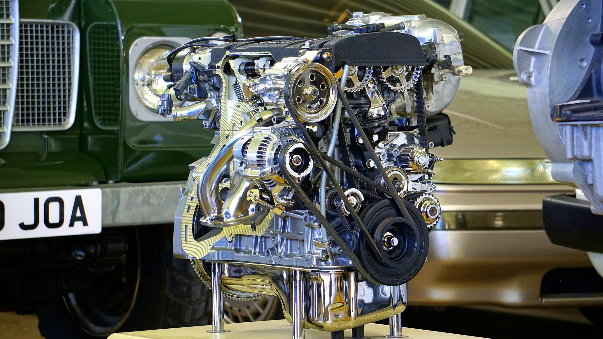

MOTORJI Z NOTRANJIM ZGOREVANJEM
Motor z notranjim zgorevanjem je toplotni stroj, ki spreminja notranjo energijo goriva v mehansko delo.
Od prvih poskusov iz 19. Stoletja je nastalo veliko različnih verzij za različne namene in z različnim načinom delovanja, a osnovna definicija še vedno velja.
V današnjem svetu kljub vse več govora o električnih vozili in strojih še vedno prevladuje. Na tej spletni strain si lahko preberete o zgodovini, različnih tipih motorjev, njihovih sestavnih delih in o pogonskih gorivih.
